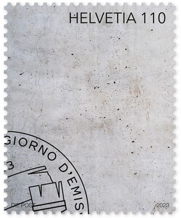
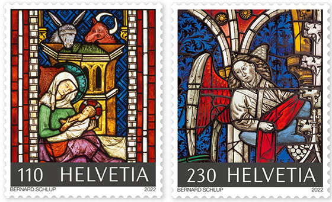

SWISS CONCRETE WALL ART STAMP OF 2023
Victor Manta
In the last decades, postal administrations compete to present and produce postage stamps that show and/or use different materials. In 2023, the Swiss postal administration decided to amaze the world with a new monochrome stamp, tasteless and odorless, featuring the most common construction material, the concrete. It is visualized in an "artistic" context, as a basic block that characterizes buildings of Switzerland.
Here is what the Swiss postal administration itself proudly tells us about its gray "masterpiece":
"The “Art in architecture” stamp completes the series launched in 2020 to reflect Swiss Post’s commitment to art. As with its predecessors, the materials used for this special stamp again play an important role in its design, suggesting the pillar for which the stamp stands. To give the concrete wall depicted in the design a tactile dimension, cement pigments were added to the ultra-matt finish. ... As a stamp design, the symbolic concrete wall represents an artistic pillar that characterizes Swiss Post buildings throughout Switzerland."
We notice that, unlike many others, the stamp does not reveal its designer, which is understandable for this "achievement", which we will hasten to erase as soon as possible from our memory.

To change the taste, let's mention a beautiful Swiss art issue from 2022, dedicated to Christmas, issued by the same Swiss post office, which delights with the composition and colors of the two stamps from the set they compose. We read with pleasure what the Swiss post reveals to us about the two artistic miniatures and pay tribute on this occasion by printing the name of their designer, Mr. Bernard Schlup:
"Two impressive stamp designs draw attention to the cultural and historical wealth of sacred art in our country. They depict selected sections of church windows at Bern Cathedral and Königsfelden Abbey."
